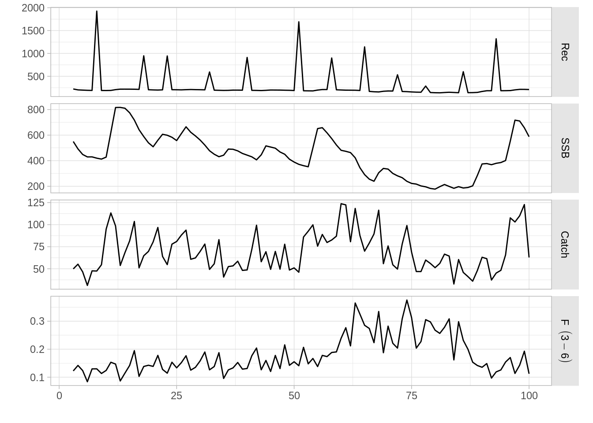

## Warning: replacing previous import 'ggplot2::%+%' by 'FLCore::%+%' when
## loading 'ggplotFL'We will show you how to simulate stocks from scratch using the libraries FLife and FLasher from the Fisheries Library in R. The combination of those two libraries allows the user to initiate and project a fishstock based on the understanding of life-history theory (quote the big cahuna). This tutorial is structured in two parts; the first part shows the quick way and the second part highlights the flexibility of the method.
We will use FLife to setup the stock and FLasher to project the stock. The process can be summarised as follows:
First we need to load both libraries:
To initialise a stock is to use the function FLPar() specifying the argument linf to create a FLPar-object for a given L∞ (asymptotic length parameter of the von Bertalanffy growth curve). The function lhPar() will extend the required attributes using the big cahuna’s life history relationships. The resulting FLPar-object contains the life history parameters required to create a FLBRP-object using lhEql().
An object of class "FLPar"
params
linf
100
units: NA An object of class "FLPar"
params
linf k t0 a b ato95 a50
100.0000 0.1653 -0.1138 0.0003 3.0000 1.0000 4.3462
asym bg m1 m2 a1 sl sr
1.0000 3.0000 217.3564 -1.6100 5.3462 1.0000 5000.0000
s v
0.9000 1000.0000
units: cm Now the simulation-setup object needs to be created using lhEql(), which upon closer inspection contains all the “at-age” information required to create the stock in the next step. In this particular case the stock model will use 41 age classes. The fisheries mortalities (F bar = seq(0, F_crash, length.out = 101)) are stored as “years” in the object, which is confusing but should not bother the user. The next step will use each fisheries mortality separately and calculate a stock-size at equilibrium for that specific F. The overall selectivity is a combination of two quantities: landings.sel and discards.sel. They are fixed at this stage (to default if not specified) and will be used for the entire projection. Means to change the levels of Fbar and the selectivity during the simulation will be shown further down.
An object of class "FLPar"An object of class "FLPar"
params
linf k t0 a b ato95 a50
100.0000 0.1653 -0.1138 0.0003 3.0000 1.0000 4.3462
asym bg m1 m2 a1 sl sr
1.0000 3.0000 217.3564 -1.6100 5.3462 1.0000 5000.0000
s v
0.9000 1000.0000
units: cm This step is very simple. All it it requires is the following little code:
At this point the reader is invited to browse the FLStock_-object at his leisure using str(stk). We will show the output of summary(stk) as it is all that is required to highlight what has happened:
An object of class "FLStock"
Name:
Description:
Quant: age
Dims: age year unit season area iter
41 101 1 1 1 1
Range: min max pgroup minyear maxyear minfbar maxfbar
0 40 40 1 101 1 40
catch : [ 1 101 1 1 1 1 ], units = NA
catch.n : [ 41 101 1 1 1 1 ], units = NA
catch.wt : [ 41 101 1 1 1 1 ], units = NA
discards : [ 1 101 1 1 1 1 ], units = NA
discards.n : [ 41 101 1 1 1 1 ], units = NA
discards.wt : [ 41 101 1 1 1 1 ], units = NA
landings : [ 1 101 1 1 1 1 ], units = NA
landings.n : [ 41 101 1 1 1 1 ], units = NA
landings.wt : [ 41 101 1 1 1 1 ], units = NA
stock : [ 1 101 1 1 1 1 ], units = NA
stock.n : [ 41 101 1 1 1 1 ], units = NA
stock.wt : [ 41 101 1 1 1 1 ], units = NA
m : [ 41 101 1 1 1 1 ], units = NA
mat : [ 41 101 1 1 1 1 ], units =
harvest : [ 41 101 1 1 1 1 ], units = f
harvest.spwn : [ 41 101 1 1 1 1 ], units =
m.spwn : [ 41 101 1 1 1 1 ], units = In contrast to the eql object, the new stock object has 101 “yearly” entries (read stock levels at 101 different Fbars). The quantities, that are calculated for each age class, have a “41” at the first position (e.g. catch.n) since we specified 41 age classes. The compunded quantities contain a “1” at the first position (e.g. catch) as they are applicable to or the result of all classes. The plot of the stock object is a good summary:
Line plots from our stock object.
The x-axis is an index of the Fbar sequence specified in eql and not of time. As such the figure should be read in columns: for a given Fbar the catch, SSB and recruitment will be in equilibrium at a the level indicated on the plot. The creation of the stock-object also changed Fbar to Fage via a selection-at-age curve.
This selectivity curve is not available separately in this particular object (FLStock) and is implied in the distribution of Fage. This is important as we see later: in order to create an unfished stock, one needs to use a stock with a tiny amount of fisheries mortality (i.e. Fbar < 0.1) to maintain the selectivity pattern within the stock-object. As we will see later, we can forward project using zero fisheries mortality. However, if we choose the unfished parameter space generated within stk we will not be able to introduce fisheries mortality during the projection stage as the selectivity for all age groups will be 0.
In this section we will proiject/simulate the stock for 100 years using the previously generated FLStock-object (stk). The first step is to create an output object into which we will project the stock. As mentioned before, we must use a stock at equilibrium with a minimum of fisheries mortality in order to maintain the selection structure. As the index of stk are linked to fisheries mortalities, we will use the second realisation stk[,2] (as the first is Fbar = 0, which can be checked by fbar(stk[,1])).
An object of class "FLStock"
Name:
Description:
Quant: age
Dims: age year unit season area iter
41 99 1 1 1 1
Range: min max pgroup minyear maxyear minfbar maxfbar
0 40 40 2 100 1 40
catch : [ 1 99 1 1 1 1 ], units = NA
catch.n : [ 41 99 1 1 1 1 ], units = NA
catch.wt : [ 41 99 1 1 1 1 ], units = NA
discards : [ 1 99 1 1 1 1 ], units = NA
discards.n : [ 41 99 1 1 1 1 ], units = NA
discards.wt : [ 41 99 1 1 1 1 ], units = NA
landings : [ 1 99 1 1 1 1 ], units = NA
landings.n : [ 41 99 1 1 1 1 ], units = NA
landings.wt : [ 41 99 1 1 1 1 ], units = NA
stock : [ 1 99 1 1 1 1 ], units = NA
stock.n : [ 41 99 1 1 1 1 ], units = NA
stock.wt : [ 41 99 1 1 1 1 ], units = NA
m : [ 41 99 1 1 1 1 ], units = NA
mat : [ 41 99 1 1 1 1 ], units =
harvest : [ 41 99 1 1 1 1 ], units = f
harvest.spwn : [ 41 99 1 1 1 1 ], units =
m.spwn : [ 41 99 1 1 1 1 ], units = In this storage object are also the relevant parameters for each year and age class. Some of the parameters can be changed prior to the projections as we will see later. In order to project we need to specify two more functions/paramter: the stock-recruitment relationship and the trajectory of Fbar. As this is the simplest of projections, we will use the default Beverton-Holt stock-recruitment function, parameterised according to the big cahuna’s relationships:
bhm <- as(eql, "predictModel")
nssb <- FLQuant(seq(1, 2000, length=100))
ggplot(model.frame(FLQuants(ssb=nssb, bevholt=predict(bhm, ssb=nssb))),
aes(x=ssb, y=bevholt)) + geom_line()The Beverton-Holt stock-recruitment model used to simulate the stocks.
As for the fishing mortality, we shall fix it at FMSY for the entire run.
Note we start at year 3 rather than year 1 or 2. This is due to the internal implementation; when we used the crutch replacing years with levels of Fbar and then picked the second Fbar, internally the first two slots are filled. This is not a big issue as long we remember to make the time series long enough and cut off the unwanted early years.
Now we are ready to project a stock, in a deterministic fashion as no noise has been added.
Fish-stock behaviour over time. Note the deterministic nature as well as the artefact at the first data point. The artefact is a result of the way the simulation is initialised. See further down how to remove it.
We will show how to change and implement different life history parameters during the setup (i.e. during the first step). As before we use FLPar to set the initial life history parameters.
The parameters available in a FLpar-object are:
| Parameter | Description |
|---|---|
| linf | L ∞ von Bertalanffy |
| k | k von Bertalanffy |
| t0 | size at t0 von Bertalanffy |
| a | length-weight relationship |
| b | length-weight relationship |
| ato96 | age @ 95% maturity * |
| a50 | age @ 50% maturity |
| asym | no idea |
| bg | no idea |
| m1 | natural mortality parameter for function |
| m2 | same (but not equal) as m1 |
| a1 | no idea |
| sl | selectivity @ age ** |
| sr | Stock Recruitment Function |
| s | Steepnes Bev-Holt |
| v | Virgin Biomass |
* age at 95% maturity is used as an offset to the age at which 50% maturity occurs.
** selectivity at age parameter, σ2 of lefthand limb of double normal distribution
par <- FLPar(linf=90, a=0.00001, sl=1, sr=2000, a1=4, s=0.65, v=1000)
parg <- lhPar(par)
range <- c(min=1, max=10, minfbar =3, maxfbar = 6, plusgroup=10)
eql <- lhEql(parg, range=range)In this case we changed some life history parameters with FLPar and estimated the other required parameters using lhPar. In the following step, we restricted our age groups to 10 in total, starting at age 1 not 0. The plusgroup is in the 10th age group. If we do change the number of age groups, we also need to specify the minimum and maximum fully selected age classes using minfbar and maxfbar. Once this is all set, we use lhEql to create the simulation-setup object. For the simulation and projection, the syntax will be exactly the same as before:
stk <- as(eql, "FLStock")
omStore <- fwdWindow(stk[,2], eql, end=100)
bhm <- as(eql, "predictModel")
FMSY <- c(fmsy(eql))
hfc <- fwdControl(year=3:100, quant="f", value = FMSY)
OpMod <- fwd(omStore, sr = bhm, control = hfc)
plot(OpMod[,-1,,,,]) #removing the data artefactStock with different life history parameters and the first-year artefact removed.
The following chunk of code needs to be run before the code below will work.
par <- FLPar(linf=90, a=0.00001, sl=1, sr=2000, a1=4, s=0.65, v=1000)
parg <- lhPar(par)
range <- c(min=1, max=10, minfbar =3, maxfbar = 6, plusgroup=10)
eql <- lhEql(parg, range=range)
stk <- as(eql, "FLStock")
omStore <- fwdWindow(stk[,2], eql, end=100)
bhm <- as(eql, "predictModel")
FMSY <- c(fmsy(eql))
hfc <- fwdControl(year=3:100, quant="f", value=FMSY)Natural mortality (M) is not that easily specified. Due to the way the FLBRP-object is coded, we must write a function that specifies natural mortality by either (a) age, (b) length, (c) weight. There are two default funtions gislason (length) and lorenzen (weight). Creating an FLBRP-object using the default lorenzen method:
eql <- lhEql(parg, range=range, m = lorenzen)We are not obligated to use the coded functions, as long as we respect a few simple rules. The function must have two arguments, of which one must be params. The second argument must be one of the following three: age, length, weight. Although params must be included, there is no necessity to use it within the function. Here are two examples:
# length based function with the use of params
mJensen <- function(length, params){
length[]=params["a50"]
1.45 / length
}
eql <- lhEql(parg, range=range, m = mJensen)
# age based equation without use of params
mFun <- function(age, params){
(0.2+ 1.64* exp(-age))
}
eql <- lhEql(parg, range=range, m = mFun)The fisheries mortality is changed by specifying different values in the fwdControl() function (it is assumed eql has already been generated):
ifc <- fwdControl(year=3:100, quant="f", value=c(((2*FMSY)/100) * c(3:100)))
OpMod <- fwd(omStore, sr = bhm, control=ifc)
plot(OpMod[,-1,,,,])Fish stock with increasing fisheries mortality to a maximum of 2 x FMSY.
The value that is changed is Fbar, the selectivity is not affected by this. Your imagination is the limit when it comes to set fisheries mortality levels. A pattern often used is the “rollercoaster” - up, stable, down:
rfc <- fwdControl(year=3:100, quant="f", value=c(rep(FMSY,50), (FMSY + ((FMSY/10)*c(1:10))), rep(2*FMSY, 20), (2*FMSY - (((1.1 * FMSY)/10)*c(1:10))), rep(FMSY, 8)))
OpMod <- fwd(omStore, sr = bhm, control=rfc)
plot(OpMod[,-1,,,,])Fish stock simulated using a “rollercoaster” fishing behviour. The fishing mortality increases to two times FMSY, remains at that level and then reduces to 1.1 x FMSY.
Selectivity can be set by altering the harvest attribute of the output object known as omStore in our case:
omStore <- fwdWindow(stk[,2], eql, end=100)
harvest(omStore) <- c(0.1, 0.5, 1, 0.8, 0.65, 0.55, rep(0.5,4))
harvest(omStore)[,c(75:99)] <- c(0,0, 0.1, 0.5, 1, 0.8, 0.65, 0.55, rep(0.5,2))
moo <- as.data.frame(harvest(omStore))
plot(data~age, moo, type = "n", ylab = "selectivity")
for (i in c(4,77)) lines(data~age, moo[moo$year == i,], col = i, lwd = 2)
legend("bottomright", legend = c("selectivity before shift", "selectivity after shift"), col = c(4, 77), lwd = 2)Shift in selectivity at age.
Fish stock with shift in selectivity at year 75.
We are showing the methodology to add uncertainty in the recruitment process as well as the fishing mortality. To add uncertainty in natural mortality, I assume that you would could do this by modifying the function above, but it has not been tried THERE BE DRAGONS (and let us know how you got on).
In both cases the deviances have to be sampled outside of the FLxxx-process and then added to the parameters. For the recruitment process there is a handy argument within fwd(), called deviances. There are two ways of introducing deviations from the recruitment curve (we are assuming that we created a omStore object already):
lndev03 <- rlnorm(1, FLQuant(0, dimnames=list(year=3:100)), 0.3)
OpMod <- fwd(omStore, sr=bhm, control=hfc, deviances=lndev03)
## or ##
lndev03 <- rlnorm(100, 0, 0.7)
OpMod <- fwd(omStore, sr=bhm, control=hfc, deviances=FLQuant(lndev03, dimnames=list(year=3:100)))
plot(OpMod[,-1,,,,])Added stochasticity in recruitment.
This can be used to produce any kind of deviations from the stock-recruitment function, e.g. pulse recruitment:
nrPu <- 12
pDev <- rep(1, (100 -2))
#setting the years of the pulses around a mean number of years
s1 <-cumsum(rlnorm(nrPu, 0, .3)*(100/(nrPu+3)))
s1a <- round(s1)[s1 <100]
# setting the pulses
pDev[s1a] <- 6*rlnorm(length(s1a),0,0.6)
puMod <- fwd(omStore, sr=bhm, control=hfc, deviances=FLQuant(pDev, dimnames = list(year = 3:100)))
plot(puMod[,-1,,,,])Stochastic pulse recruitment events.
Adding noise to fisheries mortality is done by altering the control object that controls the fishing pattern. We use a similar method as described above, except we add noise to the average fishing patter:
FMSY <- c(fmsy(eql))
ranfc <- fwdControl(year=3:100, quant="f", value= 1.5 * FMSY *rlnorm(98,0,0.2))
OpMod <- fwd(omStore, sr = bhm, control=ranfc)
plot(OpMod[,-1,,,,])Stochasticity in fishing mortality
A stock with a lot of stuff going on, see if you can identify it from the code:
set.seed(5432)
par <- FLPar(linf=90, a=0.00001, sl=1, sr=2000, a1=4, s=0.65, v=1000)
parg <- lhPar(par)
range <- c(min=1, max=10, minfbar =3, maxfbar = 6, plusgroup=10)
mFun <- function(age, params){
(0.2+ 1.64* exp(-age))
}
eql <- lhEql(parg, range=range, m = mFun)
stk <- as(eql, "FLStock")
bhm <- as(eql, "predictModel")
omStore <- fwdWindow(stk[,2], eql, end=100)
harvest(omStore) <- c(0.1, 0.5, 1, 0.8, 0.65, 0.55, rep(0.5,4))
harvest(omStore)[,c(75:99)] <- c(0,0, 0.1, 0.5, 1, 0.8, 0.65, 0.55, rep(0.5,2))
nrPu <- 12
pDev <- rep(1, (100 -2))
#setting the years of the pulses around a mean number of years
s1 <-cumsum(rlnorm(nrPu, 0, .3)*(100/(nrPu+3)))
s1a <- round(s1)[s1 <100]
# setting the pulses
pDev[s1a] <- 6*rlnorm(length(s1a),0,0.6)
moo <- c(rep(FMSY,50), (FMSY + ((FMSY/10)*c(1:10))), rep(2*FMSY, 20), (2*FMSY - (((1.1 * FMSY)/10)*c(1:10))), rep(FMSY, 8))
ranfc <- fwdControl(year=3:100, quant="f", value= moo * rlnorm(98,0,0.2))
OpMod <- fwd(omStore, sr = bhm, deviances=FLQuant(pDev, dimnames = list(year = 3:100)), control=ranfc)
#removing the first year
plot(OpMod[,-1,,,,])
This document is licensed under the Creative Commons Attribution-ShareAlike 4.0 International license.